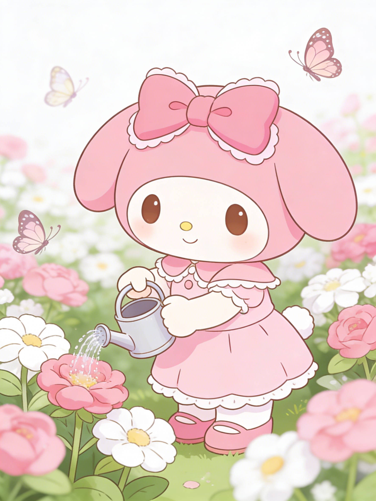

My Melody is a beloved character created by Sanrio in 1975. She is a cute white rabbit who wears a hood that covers her ears. My Melody is known for her kind heart and gentle personality.
My Melody lives in Marigold Garden with her family and friends. Her little sister Piano is an adorable sheep who wears a red hood. She loves baking cookies and cakes, especially for her best friend Kuromi. Despite their occasional playful rivalry, they share a deep bond of friendship.
My Melody's favorite foods are almond pound cake and carrots. She enjoys playing the recorder and spending time with her friends in the magical world of Sanrio.
My Melody is always caring and considerate of others
My Melody is always caring and considerate of others
She loves baking and creating delicious treats
She loves baking and creating delicious treats
My Melody enjoys playing the recorder
My Melody enjoys playing the recorder
She values friendship above all else
She values friendship above all else